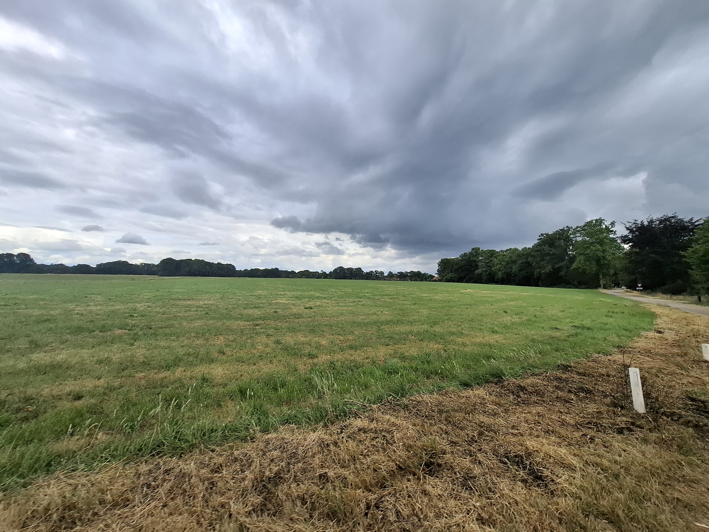

Weerfoto van de week
Hieronder zie je de actuele weerfoto uit de omgeving van het Persoonlijk Weerstation Morgenzoneinde.

Week 28 "Korenburgerveenweg"
Hieronder zie je de actuele weerfoto uit de omgeving van het Persoonlijk Weerstation Morgenzoneinde.

Week 28 "Korenburgerveenweg"